TRANSFER ASSEMBLY > REASSEMBLY |
| 1. INSTALL REAR TRANSFER OUTPUT SHAFT |
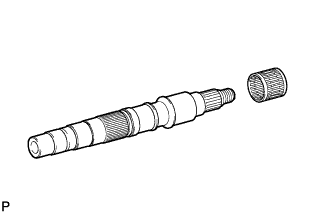 |
Install a new needle roller bearing.
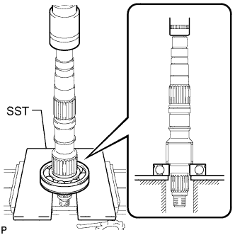 |
Using SST and a press, press in a new bearing.
| 2. INSTALL TRANSFER DRIVE SPROCKET BEARING |
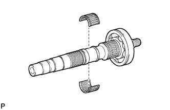 |
Install the bearing to the output shaft.
| 3. INSTALL TRANSFER DRIVE SPROCKET SUB-ASSEMBLY |
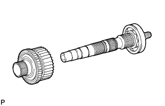 |
Install the drive sprocket to the output shaft.
| 4. INSTALL TRANSFER OUTPUT SHAFT SPACER |
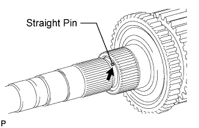 |
Install the straight pin to the output shaft.
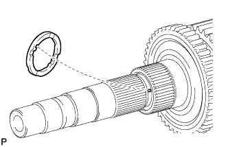 |
Align the straight pin with the straight pin groove of the output shaft spacer, and slide on the output shaft spacer.
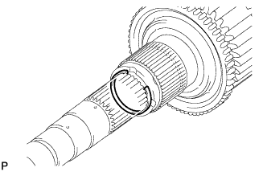 |
Using a screwdriver and hammer, tap on the snap ring.
| 5. INSPECT TRANSFER DRIVE SPROCKET SUB-ASSEMBLY |
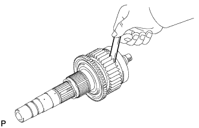 |
Using a feeler gauge, measure the drive sprocket thrust clearance.
| 6. INSTALL CENTER DIFFERENTIAL CASE |
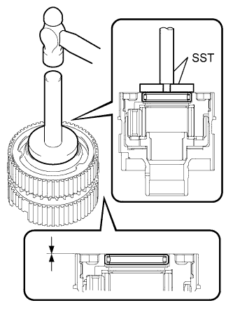 |
Using SST and a hammer, tap in a new needle roller bearing until its surface is 0 to 0.5 mm (0 to 0.0197 in.) from the center differential case upper surface.
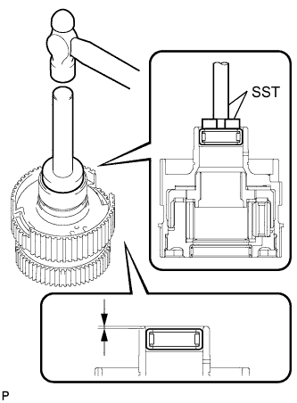 |
Using SST and a hammer, tap in a new needle roller bearing until its surface is 1.5 to 2.0 mm (0.0591 to 0.0787 in.) from the center differential case upper surface.
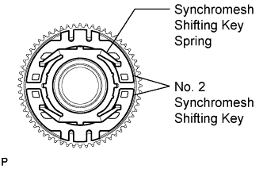 |
Install the synchromesh shifting key spring and No. 2 synchromesh shifting keys as shown in the illustration.
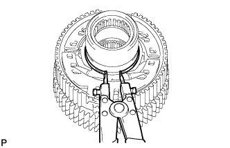 |
Using a snap ring expander, install the snap ring.
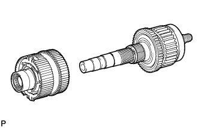 |
Install the center differential case to the output shaft.
| 7. INSTALL NO. 1 TRANSFER OUTPUT SHAFT SPACER |
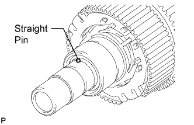 |
Install the straight pin to the output shaft.
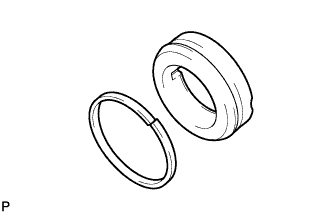 |
Install a new seal ring to the output shaft spacer.
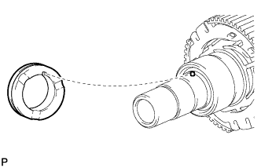 |
Align the pin with the straight pin groove of the output shaft spacer, and slide on the output shaft spacer.
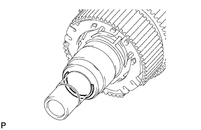 |
Using a screwdriver and hammer, tap on the snap ring.
| 8. INSTALL TRANSFER OUTPUT SHAFT WASHER |
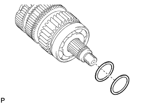 |
Install the 2 output shaft washers to the output shaft.
| 9. INSTALL TRANSFER INPUT SHAFT PLUG |
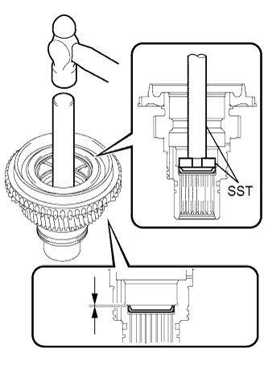 |
Using SST and a hammer, tap in a new input shaft plug until its surface is 1.0 to 1.8 mm (0.0394 to 0.0709 in.) from the input shaft upper surface.
| 10. INSTALL TRANSFER INPUT SHAFT BIMETAL FORMED BUSH |
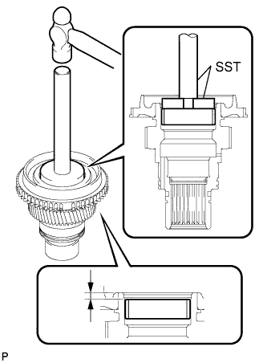 |
Using SST and a hammer, tap in a new bush until its surface is 5.5 to 5.9 mm (0.217 to 0.232 in.) from the input shaft upper surface.
| 11. INSTALL TRANSFER INPUT SHAFT BEARING |
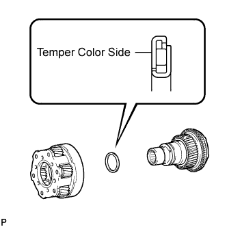 |
Install the low planetary gear bearing and low planetary gear to the input shaft.
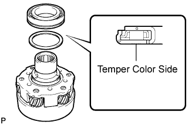 |
Install the low planetary gear bearing and a new input shaft bearing to the input shaft.
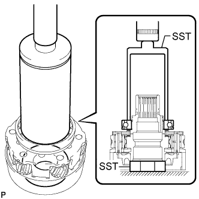 |
Using SST and a press, press in the bearing.
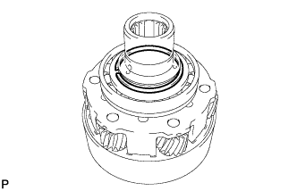 |
Select a snap ring that allows for minimum axial play and install it to the shaft.
| Mark | Specified Condition |
| C | 2.13 to 2.18 mm (0.0839 to 0.0858 in.) |
| D | 2.18 to 2.23 mm (0.0858 to 0.0878 in.) |
| E | 2.23 to 2.28 mm (0.0878 to 0.0898 in.) |
| F | 2.28 to 2.33 mm (0.0898 to 0.0917 in.) |
| G | 2.33 to 2.38 mm (0.0917 to 0.0937 in.) |
| H | 2.38 to 2.43 mm (0.0937 to 0.0957 in.) |
| J | 2.43 to 2.48 mm (0.0957 to 0.0976 in.) |
Using a snap ring expander, install the snap ring.
| 12. INSTALL NO. 1 TRANSFER INPUT SHAFT SEAL RING |
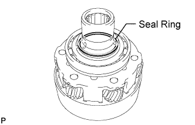 |
Apply transfer oil to a new seal ring.
Install a new seal ring to the input shaft.
| 13. INSTALL TRANSFER DRIVEN SPROCKET BEARING |
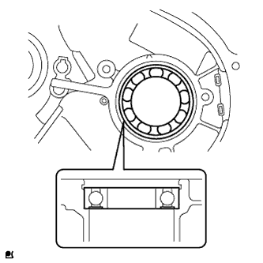 |
Install a new bearing to the front transfer case in the direction shown in the illustration.
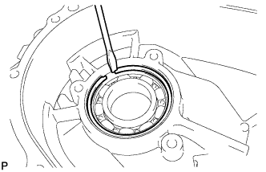 |
Using a screwdriver, install the snap ring.
| 14. INSTALL TRANSFER LOW PLANETARY RING GEAR |
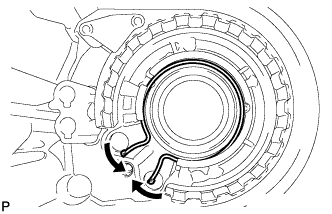 |
Using a snap ring expander, install the snap ring to the front transfer case.
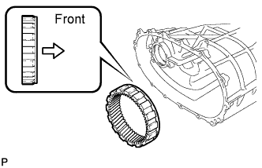 |
Install the low planetary ring gear to the front transfer case.
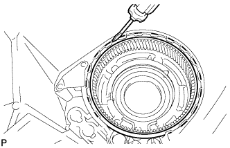 |
Using a screwdriver, install the snap ring.
| 15. INSTALL INPUT SHAFT ASSEMBLY |
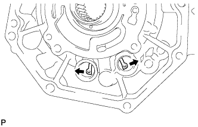 |
While expanding the snap ring, install the input shaft to the front transfer case.
Apply adhesive to the threads of the 2 case plugs.
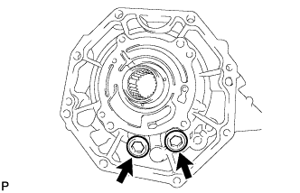 |
Using a 14 mm hexagon wrench, install the 2 case plugs.
| 16. INSTALL TRANSFER CASE MAGNET |
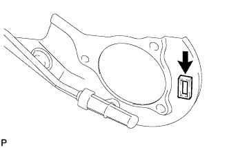 |
Install the magnet to the oil separator.
| 17. INSTALL TRANSFER OIL SEPARATOR SUB-ASSEMBLY |
Install a new O-ring to the oil separator.
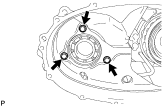 |
Install the oil separator with the 3 bolts.
| 18. INSTALL SIDE GEAR SHAFT HOLDER BEARING |
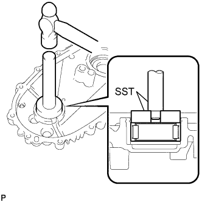 |
Using SST and a hammer, tap in a new bearing to the rear transfer case.
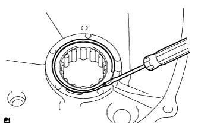 |
Using a screwdriver, install the snap ring.
| 19. INSTALL FRONT DRIVE CLUTCH SLEEVE |
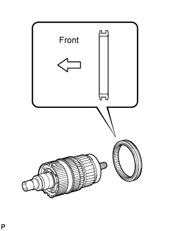 |
Apply gear oil to the connecting areas of the clutch sleeve and center differential case.
Install the clutch sleeve onto the output shaft.
| 20. INSTALL REAR TRANSFER OUTPUT SHAFT ASSEMBLY |
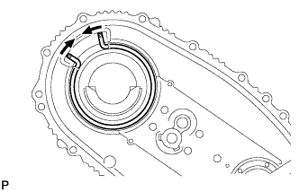 |
Install the snap ring to the rear transfer case.
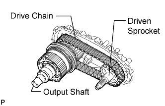 |
Install the output shaft, drive chain and driven sprocket.
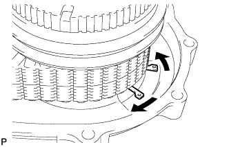 |
Using a snap ring expander, install the snap ring to the output shaft.
| 21. INSTALL TRANSFER SHIFT ACTUATOR ASSEMBLY |
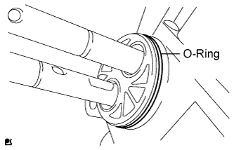 |
Install a new O-ring to the shift actuator.
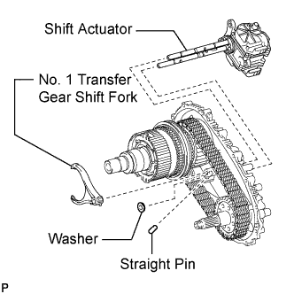 |
Set the No. 1 gear shift fork to the front drive clutch sleeve.
Set the washer and straight pin to the rear transfer case.
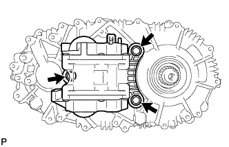 |
Install the shift actuator to the rear transfer case with the 3 bolts.
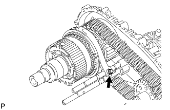 |
Install the No. 1 gear shift fork to the shift actuator with the bolt.
| 22. INSTALL NO. 2 TRANSFER GEAR SHIFT FORK |
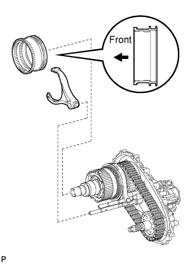 |
Set the No. 2 gear shift fork together with the high and low clutch sleeve to the shift actuator.
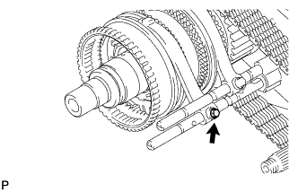 |
Install the No. 2 gear shift fork to the shift actuator with the bolt.
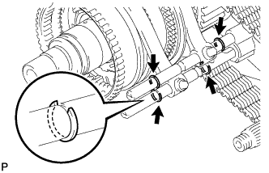 |
Using a screwdriver and hammer, tap the 4 shift fork shaft snap rings onto the shift fork shaft.
| 23. INSTALL FRONT TRANSFER OUTPUT SHAFT NEEDLE ROLLER BEARING |
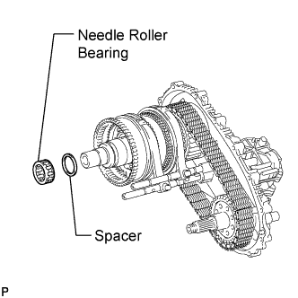 |
Install the needle roller bearing and spacer to the output shaft.
| 24. INSTALL NO. 1 SYNCHRONIZER RING |
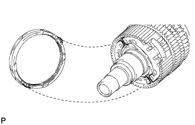 |
Align the protrusion of the synchronizer ring with the notch on the differential case and install it.
| 25. INSTALL REAR TRANSFER CASE ASSEMBLY |
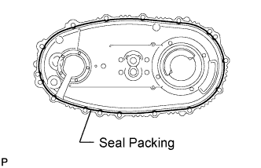 |
Apply seal packing to the rear transfer case as shown in the illustration.
Install the rear transfer case with the 14 bolts.
| 26. INSTALL TRANSFER CASE PLUG |
Apply adhesive to the threads of the plug.
Using a 6 mm hexagon wrench, install the plug.
| 27. INSTALL NO. 1 TRANSFER CASE PLUG |
Install the pin and compression spring to the front transfer case.
Apply adhesive to the threads of the plug.
Install the plug.
| 28. INSTALL TRANSFER CASE REAR OIL SEAL |
Apply transfer oil to the spline of the output shaft.
Using SST and a hammer, tap in a new oil seal until its surface is flush with the housing upper surface.
| 29. INSTALL REAR OUTPUT SHAFT COMPANION FLANGE SUB-ASSEMBLY |
Install the companion flange onto the output shaft.
Using SST to hold the companion flange, install a new O-ring and a new companion flange lock nut.
 |
Using a chisel and hammer, stake the companion flange lock nut.
| 30. INSTALL TRANSFER CASE FRONT OIL SEAL |
Apply transfer oil to the spline of the driven sprocket.
 |
Using SST and a hammer, tap in a new oil seal until its surface is 1 to 1.5 mm (0.0394 to 0.0590 in.) from the case upper surface.
| 31. INSTALL FRONT OUTPUT SHAFT COMPANION FLANGE SUB-ASSEMBLY |
Install the companion flange onto the drive sprocket.
 |
Using SST to hold the companion flange, install a new O-ring and a new companion flange lock nut.
|
Using a chisel and hammer, stake the companion flange lock nut.
| 32. INSTALL TRANSFER OIL PUMP PLATE OIL SEAL |
Using SST and a hammer, tap in a new oil seal until its surface is flush with the oil pump plate upper surface.
| 33. INSTALL TRANSFER CASE PLUG |
Install the relief valve seat, ball and compression spring to the oil pump plate.
Apply adhesive to the threads of the plug.
Using a 10 mm hexagon wrench, install the plug.
| 34. INSTALL TRANSFER CASE STRAIGHT PIN |
Install the 2 straight pins to the input shaft.
| 35. INSTALL TRANSFER OIL PUMP PLATE |
Apply transfer oil to a new O-ring, drive rotor, driven rotor and a new transfer oil seal ring.
Install the drive rotor to the input shaft.
Install the transfer oil seal ring to the input shaft.
Install the O-ring to the oil pump plate.
Install the oil pump plate and driven rotor to the front transfer case with the 4 bolts.
| 36. INSTALL PROPELLER SHAFT HEAT INSULATOR BRACKET SUB-ASSEMBLY |
Install the bracket to the rear transfer case with the bolt.